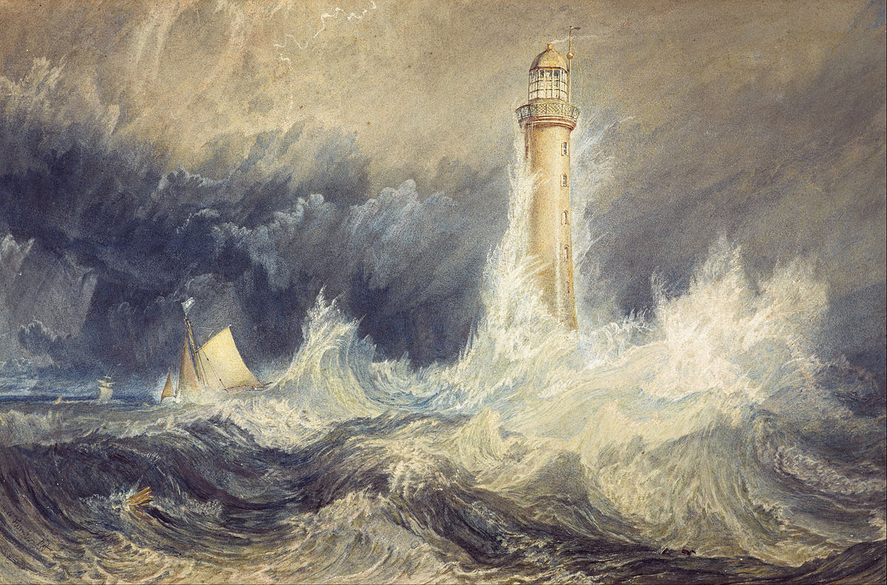

Romanticismo literario
Introduccion
El romanticismo es un movimiento artístico y literario que surgió entre finales del siglo XVIII y comienzos del siglo XIX en Alemania e Inglaterra. Desde allí se extendió a toda Europa y América.
El movimiento romántico está basado en la expresión de la subjetividad y la libertad creadora en oposición al academicismo y el racionalismo del arte neoclásico.
Tiene su origen en la influencia del movimiento germánico Sturm und Drang (que significa ‘tormenta e ímpetu’), desarrollado entre 1767 y 1785, el cual reaccionaba contra el racionalismo ilustrado.
Impulsado por el Sturm und Drang, el romanticismo rechazó la rigidez académica del neoclasicismo que, para entonces, había ganado la reputación de frío y servil al poder político.
Ideas

- Subjetividad vs. objetividad: se enfocaron en los sentimientos intensos y místicos, como miedo, pasión, locura y soledad
- Imaginación vs. inteligencia: revalorizaron el papel de la imaginación en el arte en cualquier de las disciplinas artísticas
- Lo sublime vs. belleza clásica: lo sublime se entendía como la percepción de la grandeza absoluta de lo contemplado
- Individualismo: el romántico procura la expresión del yo, el reconocimiento de la identidad individual, de la singularidad
- Nacionalismo: el nacionalismo fue la expresión colectiva de la búsqueda de la identidad del individuo. De allí el interés por el folclore
- Liberacion de las reglas academicistas: subordinan la técnica a la expresión individual y no al contrario.
- Redescubrimiento de la naturaleza: se convierte al paisaje en una metáfora del mundo interior y una fuente de inspiración
- Carácter visionario u onírico: sueños, pesadillas, fantasías y fantasmagorías, donde la imaginación se libera de lo racional
- Nostalgia por el pasado: sienten que con la modernización se han perdido la unidad entre el hombre y la naturaleza, e idealizan el pasado
- Idea de genio atormentado e incomprendido: se le distingue por su imaginación y originalidad y, también, por la narrativa de una vida atormentada.
Para saber más, visita este blog

Autores


Galería
Contacto
- Dirección: C/ Frederick Terman
- Correo: 12345@gmai.com
- Telefono: 123456789